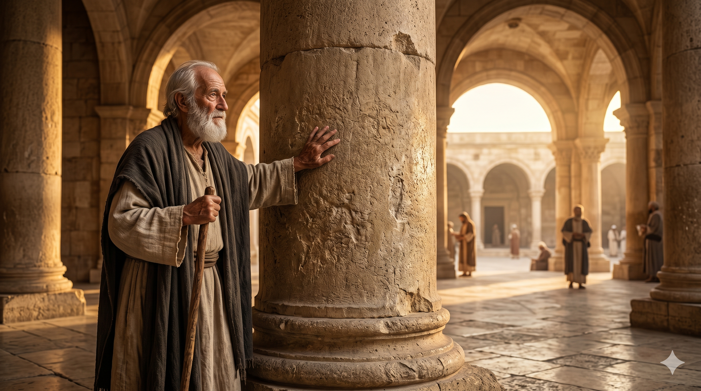

예루살렘 공의회에서 야고보, 게바(베드로), 요한이 바울과 바나바에게 친교의 악수를 나누는 장면
"또한 기둥 같이 여기는 야고보와 게바와 요한도 내게 주신 은혜를 알므로 나와 바나바에게 친교의 악수를 하였으니 우리는 이방인에게로, 그들은 할례자에게로 가게 하려 함이라" — 갈라디아서 2:9
갈라디아서 2장은 바울이 예루살렘을 방문했을 때 초대 교회의 지도자들과 나눈 만남을 기록합니다. 바울은 이방인에게 전하는 복음의 내용을 "기둥 같이 여기는" 지도자들 앞에 제시했습니다. 여기서 세 이름이 등장합니다. 야고보(예수님의 동생), 게바(베드로), 그리고 요한. 이들은 예루살렘 교회의 기둥, 즉 교회 전체를 떠받치는 핵심 지도자로 인정받는 인물들이었습니다. 바울은 그들이 자신에게 "더 이상 더할 것이 없었다"고 회고합니다. 그만큼 바울의 복음 이해는 완전했고, 기둥들은 이를 인정했습니다.
요한이 "기둥 같이 여기는" 사람으로 불린 것은 그가 그만한 무게를 감당하는 삶을 살았기 때문입니다. 기둥은 화려한 것이 아닙니다. 기둥은 무게를 짊어지는 것입니다. 요한은 예수님의 십자가 곁에서 끝까지 자리를 지켰고(요 19:26), 예수님께서 어머니 마리아를 부탁하신 사람이며(요 19:27), 부활의 첫 증인 중 한 명이었습니다(요 20:4). 그는 초대 교회가 흔들릴 때마다 그 자리에 있었습니다. 화려한 기적보다 충실한 현존 — 그것이 요한이 기둥이 된 비결이었습니다.

예루살렘 성전 돌기둥들 — 교회의 기둥이란 화려함이 아닌 묵묵히 무게를 감당하는 존재임을 묵상하며
"기둥"이라는 표현을 묵상해 봅시다. 건물에서 기둥이 하는 일은 눈에 잘 띄지 않습니다. 기둥은 무너지지 않는 것이 사명입니다. 아무리 폭풍이 불어도, 아무리 무게가 실려도, 기둥은 그 자리에 서 있어야 합니다. 요한은 초대 교회의 급격한 성장과 박해의 소용돌이 속에서 흔들리지 않는 기둥이었습니다. 우리도 삶의 어떤 영역에서 기둥의 역할을 감당하도록 부름 받습니다. 가정의 기둥, 직장의 기둥, 교회의 기둥. 그 역할은 화려하지 않지만, 없으면 무너지는 자리입니다.
기둥이 되려면 먼저 깊이 박혀야 합니다. 표면 위에 멋지게 서 있는 것이 아니라, 땅 속 깊이 묻혀 뿌리를 내려야 합니다. 요한의 뿌리는 예수님과의 오랜 동행이었습니다. "와 보라"는 초청에 응했던 첫날부터(요 1:39), 십자가 곁까지, 밧모 섬의 유배지까지 — 그는 예수님을 따라갔고, 그 따름이 그를 기둥으로 만들었습니다. 오늘 내가 서 있는 자리에서 묵묵히 버텨내는 것, 그것이 기둥의 사역입니다.
기둥은 화려하지 않습니다. 기둥은 그냥 서 있습니다.
그러나 기둥이 없으면 집이 무너집니다.
지금 당신이 서 있는 그 자리가
누군가에게는 무너지지 않는 이유가 됩니다.